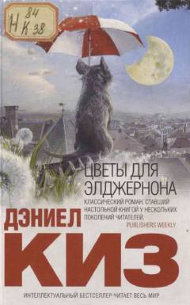

ЦДAqliy zaif yigitning operatsiyadan so'ng dahoga aylanishi haqidagi ta'sirli psixologik roman.
Ushbu asar aqliy zaiflikdan aziyat chekadigan Charli Gordon ismli yigitning tajribaviy operatsiyadan so'ng dahoga aylanishi va uning hissiy kechinmalari haqida hikoya qiladi. Roman inson qadri, intellekt va yolg'izlik kabi chuqur falsafiy mavzularni o'z ichiga olgan jahon adabiyoti durdonasidir.